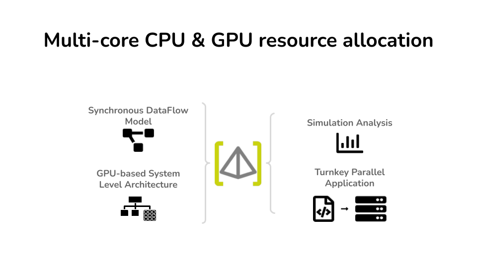

PREESM tutorial
SCAPE: Granularity optimization
SCAPE is a resource allocation optimization method based on dataflow clustering to automatically adjust the granularity of an application on Multicore CPU system.
|
Full tutorial here |
SimSDP: Multinode Design Space Exploration
SimSDP is both Multinode & CPU Multicore resource allocation method first and a Topological network, Multinode & CPU Multicore co-design method whose implementation is integrated into PREESM.The methods have been developed to provide application performance analysis for the SKA radio telescope for deployment on HPC systems, but the method is applicable to any dataflow application.
|
Full tutorial here |
CPU-GPU Design Space Exploration
A resource allocation method for heterogeneous systems Multicore CPU accelerated by GPUs (CUDA) is implemented in PREESM to provide comprehensive rapid prototyping.
|

Full tutorial here |